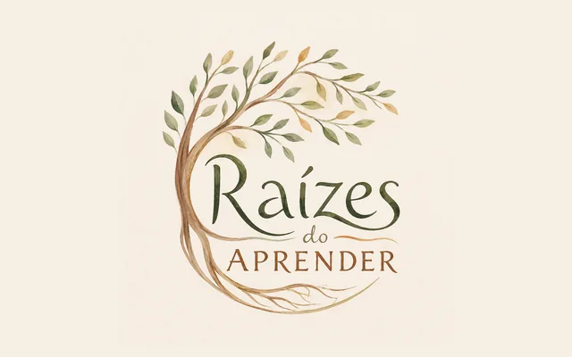

Iniciativa apoiada
Projeto Raízes do Aprender
A arrecadação da Campanha Dia de Doar irá apoiar o Projeto Raízes do Aprender com o acolhimento de crianças de 6 a 8 anos, matriculadas na rede pública de ensino, em contraturno escolar, com o objetivo de redução da defasagem escolar futura através do desenvolvimento de atividades que favorecem a prontidão para alfabetização.
Como fazemos isso:
- brincar livre e contato com a Natureza: apoia o desenvolvimento neuro motor, contribui para o equilíbrio do sistema nervoso e amadurece a socialização;
- pintura em aquarela: atua na concentração, no controle motor fino e apoia a regulação emocional;
- trabalhos manuais: permite o fortalecimento da concentração, do controle motor fino, da educação da vontade e persistência;
- alfabetização fonológica*: acompanhamento com profissional especializada em alfabetização fonológica para reforço escolar e desenvolvimento das habilidades de leitura e escrita.
Serão 16 crianças acolhidas, uma vez na semana, no espaço do Jardim Waldorf Ciranda incluindo profissionais especializados, lanche e estrutura de atendimento baseada na Pedagogia Waldorf e neurociência. O projeto prevê o acompanhamento através de avaliação inicial e final, considerando os seguintes indicadores:
- Avaliação da Prontidão neuro motora para aprendizagem, desenvolvido pelo INPP – Instituto de Psicologia Neuro-fisiológica;
- Avaliação de nível de alfabetização*
- Avaliação da percepção de aprendizado pelos familiares
- % de Presença
Ao final do projeto espera-se que as crianças alcancem pelo menos 5% de amadurecimento para prontidão escolar.